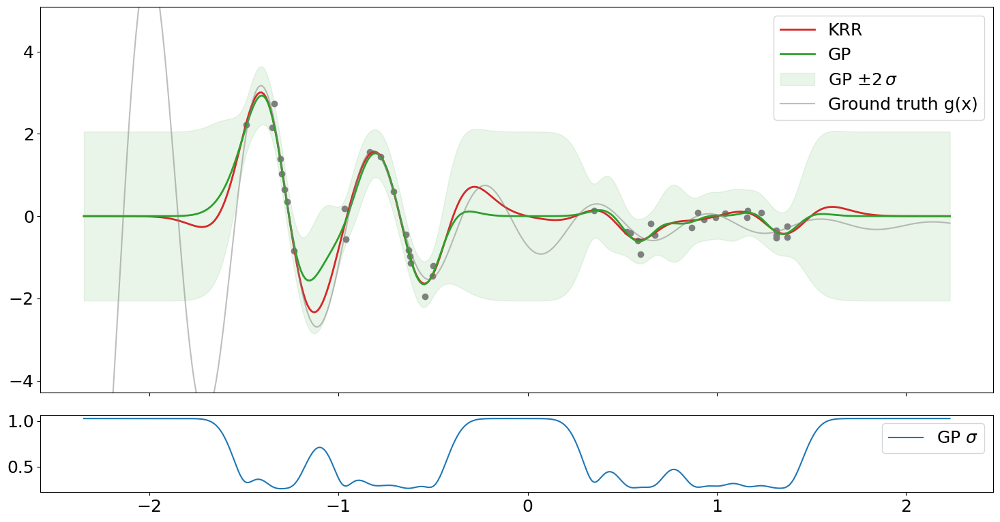
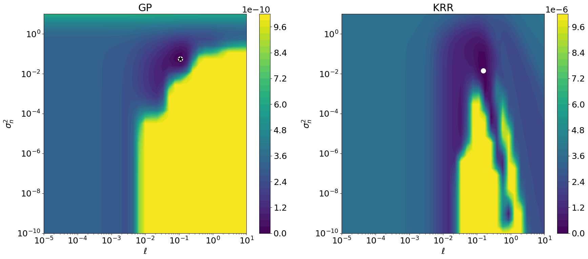
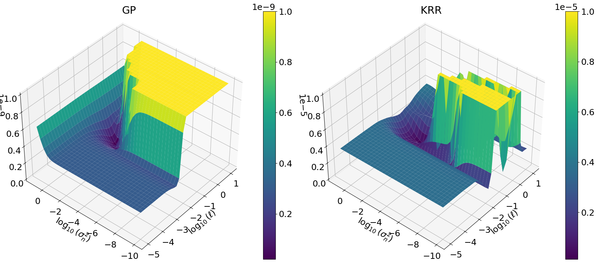

Explore GPs and KRR with code#
Functions and helpers#
Show code cell source
import itertools
import multiprocessing as mp
##import multiprocess as mp
import numpy as np
from scipy.optimize import differential_evolution
import matplotlib.pyplot as plt
from matplotlib import cm, ticker, colors
from sklearn.gaussian_process import GaussianProcessRegressor
from sklearn.gaussian_process.kernels import RBF, WhiteKernel
from sklearn.preprocessing import StandardScaler
from sklearn.model_selection import KFold
from sklearn.kernel_ridge import KernelRidge
from icecream import ic
def gt_func(x):
"""Ground truth"""
return np.sin(x) * np.exp(-0.1 * x) + 10
def gaussian_noise(x, rng, sigma=0.1):
"""Constant Gaussian noise."""
return rng.normal(loc=0, scale=sigma, size=x.shape[0])
def transform_1d(scaler, x):
assert x.ndim == 1
return scaler.transform(x.reshape(-1, 1))[:, 0]
def de_callback(xk, convergence=None):
"""Callback for differential_evolution that prints the best individual per
iteration."""
##ic(xk)
def de_callback_logscale(xk, convergence=None):
"""Callback for differential_evolution that prints the best individual per
iteration.
Since GaussianProcessRegressor's hyper optimizer code path internally works
with log(p) (= xk[0]) and log(r) (= xk[1]), we need to exp() them before
printing.
We also do that in HyperOpt if logscale=True.
"""
##ic(np.exp(xk))
def gp_optimizer(obj_func, initial_theta, bounds):
"""Custom optimizer for GaussianProcessRegressor using
differential_evolution.
Ignore initial_theta since we need only bounds for differential_evolution.
"""
# Avoid pickle error when using multiprocessing in
# differential_evolution(..., workers=-1). We'd use
# https://github.com/uqfoundation/multiprocess instead of the stdlib's
# multiprocessing to work around that but sadly differential_evolution()
# uses the latter internally, so we're stuck with that.
global _gp_obj_func_wrapper
def _gp_obj_func_wrapper(params):
##print(f"{obj_func(initial_theta)=}")
# obj_func(theta, eval_gradient=True) hard-coded in
# GaussianProcessRegressor, so it always returns the function value and
# grad. However, we only need the function's value in
# differential_evolution() below. obj_func = -log_marginal_likelihood.
##val, grad = obj_func(params)
return obj_func(params)[0]
opt_result = differential_evolution(
##lambda params: obj_func(params)[0], # nope, no pickle for you
_gp_obj_func_wrapper,
bounds=bounds,
callback=de_callback_logscale,
**de_kwds_common,
)
return opt_result.x, opt_result.fun
##from sklearn.model_selection import cross_val_score
def simple_cv(model, X, y, cv):
"""Same as
-cross_val_score(model, X, y, cv=cv, scoring="neg_mean_squared_error")
but much faster because we bypass the rich API of
cross_val_score and can thus skip many many checks.
Note that the double negative in -cross_val_score() and "neg_" is needed
b/c of the sklearn API:
"All scorer objects follow the convention that higher return values are
better than lower return values. Thus metrics which measure the distance
between the model and the data, like metrics.mean_squared_error, are
available as neg_mean_squared_error which return the negated value of the
metric."
See https://scikit-learn.org/stable/modules/model_evaluation.html#scoring-parameter
"""
errs = np.empty((cv.get_n_splits(X),), dtype=float)
for ii, tup in enumerate(cv.split(X)):
idxs_train, idxs_test = tup
fm = model.fit(X[idxs_train, ...], y[idxs_train, ...])
d = fm.predict(X[idxs_test, ...]) - y[idxs_test, ...]
# MSE
errs[ii] = np.dot(d, d) / len(d)
return errs
##return -cross_val_score(model, X, y, cv=cv, scoring="neg_mean_squared_error")
class HyperOpt:
"""Optimize hyper params of a sklearn model using
differential_evolution."""
def __init__(self, bounds, get_model, logscale=False):
self.bounds = bounds
self.get_model = get_model
self.logscale = logscale
def obj_func(self, params, X, y):
raise NotImplementedError
def fit(self, X, y, return_params=False):
global _ho_obj_func_wrapper
if self.logscale:
bounds_transform = lambda x: np.log(x)
params_transform = lambda x: np.exp(x)
callback = de_callback_logscale
else:
bounds_transform = lambda x: x
params_transform = lambda x: x
callback = de_callback
def _ho_obj_func_wrapper(params):
return self.obj_func(params_transform(params), X, y)
opt_result = differential_evolution(
_ho_obj_func_wrapper,
bounds=bounds_transform(bounds),
callback=callback,
**de_kwds_common,
)
params = params_transform(opt_result.x)
f = self.get_model(params).fit(X, y)
if return_params:
return f, params
else:
return f
class HyperOptKRR(HyperOpt):
def __init__(self, *args, seed=None, **kwds):
super().__init__(*args, **kwds)
self.seed = seed
def obj_func(self, params, X, y):
cv = KFold(n_splits=5, random_state=self.seed, shuffle=True)
return simple_cv(self.get_model(params), X, y, cv=cv).mean()
class HyperOptGP(HyperOpt):
def obj_func(self, params, X, y):
return -self.get_model(params).fit(X, y).log_marginal_likelihood()
Data#
Show code cell source
seed = 123
rng = np.random.default_rng(seed=seed)
# Equidistant x points: constant y_std (from GP) in-distribution
##x = np.linspace(0, 30, 60)
#
# Random x points for varying y_std. Also create a gap in the middle to
# show high y_std.
x1 = np.sort(rng.uniform(0, 12, 20), axis=0)
x2 = np.sort(rng.uniform(20, 32, 20), axis=0)
x = np.concatenate((x1, x2))
xspan = x.max() - x.min()
xi = np.linspace(x.min() - 0.3 * xspan, x.max() + 0.3 * xspan, len(x) * 10)
y = gt_func(x) + gaussian_noise(x, rng, sigma=0.075)
yi_gt = gt_func(xi)
# Data scaling.
in_scaler = StandardScaler().fit(x.reshape(-1, 1))
out_scaler = StandardScaler().fit(y.reshape(-1, 1))
x = transform_1d(in_scaler, x)
xi = transform_1d(in_scaler, xi)
y = transform_1d(out_scaler, y)
yi_gt = transform_1d(out_scaler, yi_gt)
X = x[:, None]
XI = xi[:, None]
Correctness checks and examples on how to play with optimizers#
This is actually the interesting part. Please inspect the code.
Show code cell source
# -------------------------------------------------------------------------
# Sanity check KernelRidge API: alpha added to diag of kernel matrix.
# -------------------------------------------------------------------------
length_scale = 1
noise_level = 0.1
kp = RBF(length_scale=length_scale)
f_krr_1 = KernelRidge(alpha=noise_level, kernel=kp).fit(X, y)
f_krr_2 = KernelRidge(alpha=0, kernel="precomputed").fit(
kp(X, X) + np.eye(X.shape[0]) * noise_level, y
)
np.testing.assert_allclose(f_krr_1.dual_coef_, f_krr_2.dual_coef_)
np.testing.assert_allclose(f_krr_1.predict(XI), f_krr_2.predict(kp(XI, X)))
# -------------------------------------------------------------------------
# Show that WhiteKernel(noise_level=) is equal to regularization param
# alpha=noise_level in both sklearn models. No hyperopt just yet
# (GaussianProcessRegressor(optimizer=None)). Use fixed hyper
# params=[length_scale,noise_level].
# -------------------------------------------------------------------------
f_gp_kp = GaussianProcessRegressor(
kernel=kp,
optimizer=None,
normalize_y=False,
alpha=noise_level,
).fit(X, y)
f_gp_kpr = GaussianProcessRegressor(
kernel=RBF(length_scale=length_scale)
+ WhiteKernel(noise_level=noise_level),
optimizer=None,
normalize_y=False,
alpha=0,
).fit(X, y)
np.testing.assert_allclose(f_gp_kp.alpha_, f_gp_kpr.alpha_)
np.testing.assert_allclose(f_gp_kp.predict(XI), f_gp_kpr.predict(XI))
np.testing.assert_allclose(f_gp_kp.alpha_, f_krr_1.dual_coef_)
np.testing.assert_allclose(f_gp_kp.predict(XI), f_krr_1.predict(XI))
# -------------------------------------------------------------------------
# Non-zero mean for fixed length_scale and noise_level.
# -------------------------------------------------------------------------
f_krr_nzm = KernelRidge(alpha=noise_level, kernel=kp).fit(X, y + 1000)
f_gp_nzm = GaussianProcessRegressor(
kernel=RBF(length_scale=length_scale)
+ WhiteKernel(noise_level=noise_level),
optimizer=None,
normalize_y=False,
alpha=0,
).fit(X, y + 1000)
np.testing.assert_allclose(f_gp_nzm.alpha_, f_krr_nzm.dual_coef_)
np.testing.assert_allclose(f_gp_nzm.predict(XI), f_krr_nzm.predict(XI))
# -------------------------------------------------------------------------
# hyperopt gp
#
# Show 4 ways to opt [length_scale, noise_level]. One using the default
# optimizer for reference. Then 3 ways to use the custom differential
# evolution (DE) based one using the HyperOpt helper class.
#
# DE results must be exactly equal if we use logscale=True, i.e. what
# GaussianProcessRegressor does internally, so these tests only check
# different code paths doing the same operations (of course also we fix all
# RNG seeds, so DE is reproducible).
#
# With logscale=False params are not equal but very close, also because we
# use polish=True which adds a final local optimizer run starting from the
# best DE result where we assume that we're close to the global opt and
# things are convex-ish.
# -------------------------------------------------------------------------
length_scale_bounds = (1e-5, 10)
noise_level_bounds = (1e-10, 10)
bounds = [length_scale_bounds, noise_level_bounds]
de_kwds_common = dict(
polish=True,
disp=False,
atol=0,
tol=0.001,
popsize=20,
maxiter=10000,
workers=-1,
updating="deferred",
seed=seed,
)
# Internal optimizer API. Use default local optimizer (BFGS).
#
# For the wider bounds above the -LML shows big flat plateaus and so the
# local optimizer always goes off into the wild blue yonder with
# n_restarts_optimizer=0 (the default).
#
##ic("opt gp internal default RBF + WhiteKernel ...")
f_gp_0 = GaussianProcessRegressor(
kernel=RBF(length_scale_bounds=length_scale_bounds)
+ WhiteKernel(
noise_level_bounds=noise_level_bounds,
),
n_restarts_optimizer=5,
normalize_y=False,
alpha=0,
).fit(X, y)
params_gp_0 = np.array(
[
f_gp_0.kernel_.k1.length_scale,
f_gp_0.kernel_.k2.noise_level,
]
)
ic(params_gp_0)
# Internal optimizer API. Use differential_evolution.
#
##ic("opt gp internal RBF + WhiteKernel ...")
f_gp_1 = GaussianProcessRegressor(
kernel=RBF(length_scale_bounds=length_scale_bounds)
+ WhiteKernel(
noise_level_bounds=noise_level_bounds,
),
n_restarts_optimizer=0,
optimizer=gp_optimizer,
normalize_y=False,
alpha=0,
).fit(X, y)
params_gp_1 = np.array(
[
f_gp_1.kernel_.k1.length_scale,
f_gp_1.kernel_.k2.noise_level,
]
)
ic(params_gp_1)
# External optimizer using HyperOpt helper class.
#
# RBF + WhiteKernel
#
##ic("opt gp external RBF + WhiteKernel ...")
get_model_gp_2 = lambda params: GaussianProcessRegressor(
kernel=RBF(length_scale=params[0]) + WhiteKernel(noise_level=params[1]),
optimizer=None,
normalize_y=False,
alpha=0,
)
f_gp_2, params_gp_2 = HyperOptGP(
get_model=get_model_gp_2,
bounds=bounds,
logscale=True,
).fit(X, y, return_params=True)
ic(params_gp_2)
# External optimizer using HyperOpt helper class.
#
# RBF, alpha
#
##ic("opt gp external RBF + alpha ...")
get_model_gp_3 = lambda params: GaussianProcessRegressor(
kernel=RBF(length_scale=params[0]),
optimizer=None,
normalize_y=False,
alpha=params[1],
)
f_gp_3, params_gp_3 = HyperOptGP(
get_model=get_model_gp_3,
bounds=bounds,
logscale=True,
).fit(X, y, return_params=True)
ic(params_gp_3)
np.testing.assert_allclose(params_gp_1, params_gp_2)
np.testing.assert_allclose(params_gp_1, params_gp_3)
np.testing.assert_allclose(f_gp_1.alpha_, f_gp_2.alpha_)
np.testing.assert_allclose(f_gp_1.alpha_, f_gp_3.alpha_)
np.testing.assert_allclose(f_gp_1.predict(XI), f_gp_2.predict(XI))
np.testing.assert_allclose(f_gp_1.predict(XI), f_gp_3.predict(XI))
# External optimizer using HyperOpt helper class.
#
# RBF, alpha
# logscale=False
#
##ic("opt gp external RBF + alpha nolog ...")
get_model_gp_3_nolog = lambda params: GaussianProcessRegressor(
kernel=RBF(length_scale=params[0]),
optimizer=None,
normalize_y=False,
alpha=params[1],
)
f_gp_3_nolog, params_gp_3_nolog = HyperOptGP(
get_model=get_model_gp_3_nolog,
bounds=bounds,
logscale=False,
).fit(X, y, return_params=True)
ic(params_gp_3_nolog)
# -------------------------------------------------------------------------
# hyperopt krr
#
# KRR params will be different b/c CV != log_marginal_likelihood
# -------------------------------------------------------------------------
get_model_krr = lambda params: KernelRidge(
alpha=params[1], kernel=RBF(length_scale=params[0])
)
##ic("opt krr RBF + alpha ...")
f_krr, params_krr = HyperOptKRR(
bounds=bounds,
get_model=get_model_krr,
logscale=True,
seed=seed,
).fit(X, y, return_params=True)
ic(params_krr)
##ic("opt krr RBF + alpha nolog ...")
f_krr_nolog, params_krr_nolog = HyperOptKRR(
bounds=bounds,
get_model=get_model_krr,
logscale=False,
seed=seed,
).fit(X, y, return_params=True)
ic(params_krr_nolog)
ic
|
params_gp_0
:
array
(
[
0.11021769
,
0.05521954
]
)
ic
|
params_gp_1
:
array
(
[
0.1102177
,
0.05521954
]
)
ic
|
params_gp_2
:
array
(
[
0.1102177
,
0.05521954
]
)
ic
|
params_gp_3
:
array
(
[
0.1102177
,
0.05521954
]
)
ic
|
params_gp_3_nolog
:
array
(
[
0.11021769
,
0.05521953
]
)
ic
|
params_krr
:
array
(
[
0.15470274
,
0.01442907
]
)
ic
|
params_krr_nolog
:
array
(
[
0.15470277
,
0.01442912
]
)
array([0.15470277, 0.01442912])
Plot GP and KRR predictions after hyperopt#
Show code cell source
# -------------------------------------------------------------------------
# Plot functions, data and GP's std
# -------------------------------------------------------------------------
plt.rcParams["figure.autolayout"] = True
plt.rcParams["font.size"] = 18
savefig = False
yi_krr = f_krr.predict(XI)
yi_gp, yi_gp_std = f_gp_1.predict(XI, return_std=True)
##yi_gp, yi_gp_std = f_gp_3_nolog.predict(XI, return_std=True)
fig1, axs = plt.subplots(
nrows=2,
sharex=True,
gridspec_kw=dict(height_ratios=[1, 0.2]),
figsize=(15, 8),
)
axs[0].plot(x, y, "o", color="tab:gray")
axs[0].plot(xi, yi_krr, label="KRR", color="tab:red", lw=2)
axs[0].plot(xi, yi_gp, label="GP", color="tab:green", lw=2)
axs[0].fill_between(
xi,
yi_gp - 2 * yi_gp_std,
yi_gp + 2 * yi_gp_std,
alpha=0.1,
color="tab:green",
label=r"GP $\pm 2\,\sigma$",
)
yspan = y.max() - y.min()
axs[0].plot(xi, yi_gt, label="Ground truth g(x)", color="tab:gray", alpha=0.5)
axs[0].set_ylim(y.min() - 0.5 * yspan, y.max() + 0.5 * yspan)
axs[1].plot(xi, yi_gp_std, label=r"GP $\sigma$")
for ax in axs:
ax.legend()

Plot GP and KRR hyperparameter objective functions#
So here we have it. -LML \(\neq\) CV, and therefore the optimal hyperparameters \((\ell,\eta)\) are different.
Show code cell source
# Could re-use HyperOpt instances from above, but re-create here for
# clarity.
##ic("Plot hyperopt objective functions")
nsample = 35
nlevels = 35
z_log = False
length_scale = np.logspace(*np.log10(length_scale_bounds), nsample)
noise_level = np.logspace(*np.log10(noise_level_bounds), nsample)
grid = np.array(list(itertools.product(length_scale, noise_level)))
fig2, axs2d = plt.subplots(nrows=1, ncols=2, figsize=(18, 8))
fig3, axs3d = plt.subplots(
nrows=1, ncols=2, figsize=(18, 8), subplot_kw={"projection": "3d"}
)
# zmax for linear z scale (see below)
cases = dict(gp=dict(zmax=1e-9), krr=dict(zmax=1e-5))
for icol, name in enumerate(cases):
ax2d = axs2d[icol]
ax3d = axs3d[icol]
ax2d.set_title(name.upper())
ax3d.set_title(name.upper())
if name == "krr":
ho = HyperOptKRR(
bounds=bounds,
get_model=get_model_krr,
seed=seed,
)
def func(params):
return ho.obj_func(params, X, y)
params_opt = params_krr
elif name == "gp":
# Use a fitted GP object from above that has RBF+WhiteKernel such
# that we can call log_marginal_likelihood() with a length 2 param
# array.
#
def func(params):
return -f_gp_1.log_marginal_likelihood(np.log(params))
# Use HyperOpt API defined above.
#
##ho = HyperOptGP(
## get_model=get_model_gp_2,
## bounds=bounds,
##)
##def func(params):
## return ho.obj_func(params, X, y)
params_opt = params_gp_1
with mp.Pool(mp.cpu_count()) as pool:
zz = np.array(pool.map(func, grid))
# z log scale looks nice but is hard to interpret, also it heavily
# depends on eps of course. When not using a z log scale we need to cut
# off at z >= zmax to visualize low z value regions where the global
# mins live. Note that zmax depends on bounds and thus on the range of
# z values. Compared to krr, the GP's LML is essentially flat around
# the min. Still DE and the local optimizer find the same min.
if z_log:
eps = 0.01
zz -= zz.min() - eps
zz /= zz.max()
else:
zmax = cases[name]["zmax"]
zz -= zz.min()
zz /= zz.max()
##zz = np.ma.masked_where(zz > zmax, zz)
zz[zz >= zmax] = zmax
_X, _Y = np.meshgrid(length_scale, noise_level, indexing="ij")
Z = zz.reshape((_X.shape[0], _X.shape[1]))
if z_log:
levels = np.logspace(np.log10(zz.min()), np.log10(zz.max()), nlevels)
pl2d = ax2d.contourf(_X, _Y, Z, levels=levels, norm=colors.LogNorm())
pl3d = ax3d.plot_surface(
np.log10(_X), np.log10(_Y), np.log10(Z), cmap=cm.viridis
)
else:
pl2d = ax2d.contourf(_X, _Y, Z, levels=nlevels)
pl3d = ax3d.plot_surface(
np.log10(_X),
np.log10(_Y),
Z,
cmap=cm.viridis,
)
ax3d.view_init(elev=40, azim=-140, roll=0)
fig2.colorbar(pl2d, ax=ax2d)
fig3.colorbar(pl3d, ax=ax3d)
ax2d.plot(*params_opt, "o", ms=10, color="white")
if name == "gp":
ax2d.plot(*params_gp_0, "*", ms=10, color="black")
ax2d.set_xlabel(r"$\ell$")
ax2d.set_ylabel(r"$\sigma_n^2$")
ax3d.set_xlabel(r"$\log_{10}(\ell)$")
ax3d.set_ylabel(r"$\log_{10}(\sigma_n^2)$")
ax2d.set_xscale("log")
ax2d.set_yscale("log")
if savefig:
fig1.savefig("gp_krr_pred.pdf")
fig2.savefig("gp_krr_hyperopt_objective.pdf")
plt.show()

